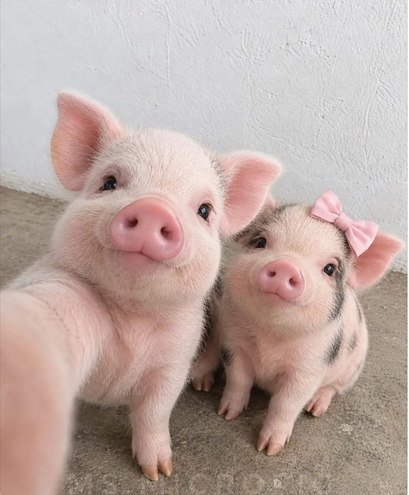

+ Quick Action
Connecting compassionate citizens to report stray animals, facilitate safe adoptions, and report animal mistreatment across local communities.
Help make stray animals safer by sharing information, finding pets in need, and
connecting them with people who can help.
User_001October 15, 2026

Public Market, San
Fernando, Pampanga
View Specific Location
Spotted this friendly-looking dog and pigs near the public market. It looks so cute. Sharing in case someone recognizes it.
Condition: Needs assistance
How StraySafe Helps
One place makes a difference
Use the website to discover animals, share useful
information, or explore responsible homing.
View community animal profiles and
their reported locations.
See about animals that may be ready for
adoption.
Share a sighting so the community
can be more aware.
Responsible care can begin with simply sharing accurate information.